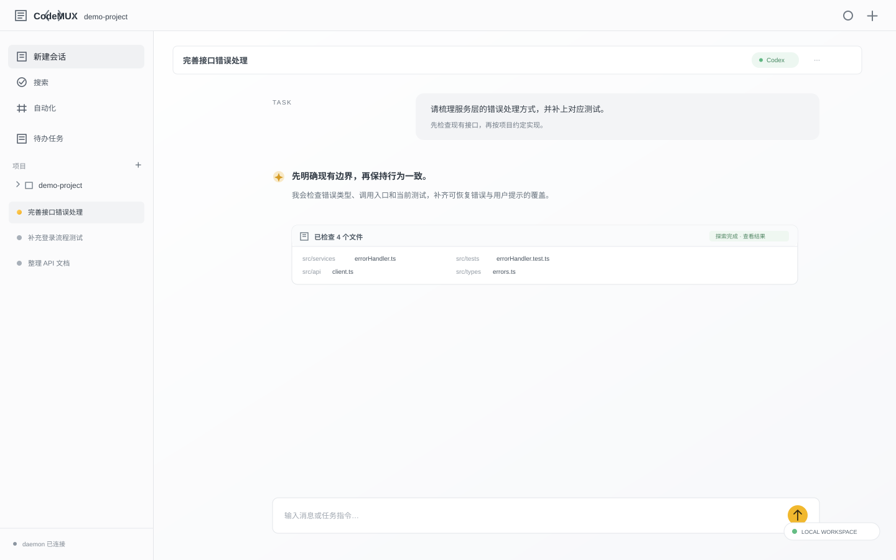
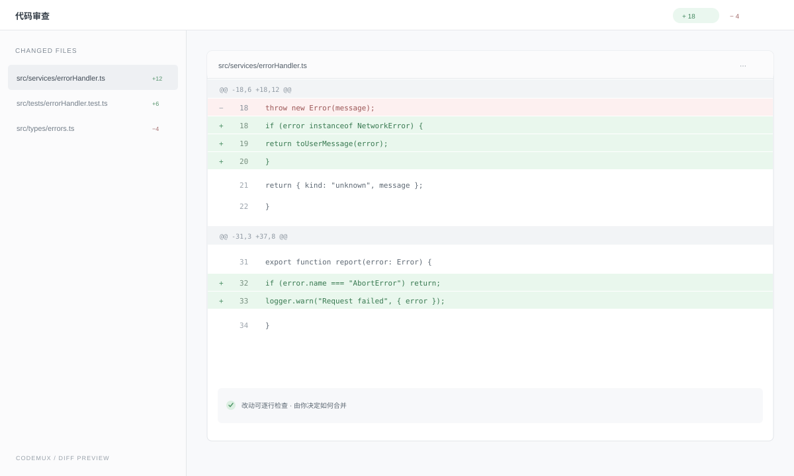

01 / AGENTS
多 Agent，各展所长
在同一个项目里切换 Claude Code、Codex、OpenCode 和 pi，保留熟悉的运行方式与各自能力。
C Claude Code 就绪
✳ Codex 就绪
O OpenCode 就绪
π pi 就绪
本地优先 · 开源 AI 编码工作台
在一处管理 Claude Code、Codex、OpenCode 与 pi。会话、项目、终端、代码审查和常用工具，围绕你的编码过程协同起来。

不止一个聊天窗口
CodeMUX 把真正的开发环节接到 Agent 身边，让上下文、工具和结果连成一条线。
在同一个项目里切换 Claude Code、Codex、OpenCode 和 pi，保留熟悉的运行方式与各自能力。
把工作交给 Agent 看板执行，在隔离 worktree 中查看真实改动，再决定如何收尾。
集中管理 MCP、Skills、终端、浏览器、Git Review 和会话历史，不用在多个窗口间来回找。
真实的开发闭环
Agent 完成任务后，打开变更文件和 Diff，理解改动，再决定合并、完成或继续处理。每一步都能回到你熟悉的项目里。
查看项目如何构建
YOUR MACHINE, YOUR WORKFLOW
CodeMUX 采用本地优先架构。独立 daemon 管理会话、Agent 与项目状态；桌面应用提供统一工作台，你的编码环境仍由你掌握。
READY WHEN YOU ARE
CodeMUX 开源免费。前往 GitHub 获取最新版本，查看安装包与发布说明。
前往下载常见问题
CodeMUX 是本地优先的桌面应用，daemon 在你的电脑上运行。浏览器和移动设备可在配对后连接到你的工作台。
当前可用的核心运行时包括 Claude Code、Codex、OpenCode 和 pi。每种运行时仍使用各自的原生能力与配置。
CodeMUX 不提供模型服务。你发送任务时，所选 Agent 或模型供应商会按其服务规则处理请求；会话与项目状态由本机 daemon 管理。
是，项目采用 MIT License。你可以在 GitHub 查看源代码、发布记录和问题追踪。